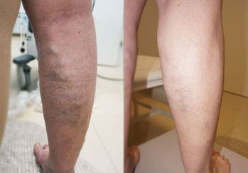

Cum să scapi de varice: m-a ajutat produsul despre care nu se vorbește la TV


A început cu o „pânză de păianjen” inofensivă în primul trimestru de sarcină. Împreună cu burta creștea și greutatea. Mă îngrășasem foarte mult - 20 de kilograme. Mă mișcam cu dificultate. Picioarele mă dureau și se umflau, aproape de naștere se acoperiseră cu o plasă de vene de culoarea albastru-purpuriu, puteai să joci Tic Tac Toe.


Medicul în care aveam încredere a spus că este vorba de varice și fiecare a doua gravidă suferă de asta. Ține de fiziologia feminină. Unguentele pe care mi le-a recomandat practic nu m-au ajutat. Efectul a fost unul slab. Cu ciorapii compresivi durerea a dispărut, dar nu pentru mult timp. Venele continuau să se umfle.
Când s-a născut Paul, bolile mele au trecut pe plan secundar. Fiul era foarte neliniștit, soțul la muncă, iar eu mă rupeam în patru. Copilul nu-mi oferea niciun răgaz, îl purtam mereu în brațe. După ce a crescut și a început să se târască a devenit și mai dificil. Cât ai zice „pește” gusta nisipul din litiera pisicii sau pantofii tatălui său. Uneori trecea toată ziua în alergătură și seara abia îmi mai puteam târîi picioarele.
Noaptea nu era chip să dorm, aveam dureri, de parcă îmi ardea cineva picioarele cu fier încins. Și dacă nu mergeam la plimbare în parc, sentimentul de vinovăție de vinovăție mă făcea să-mi pierd somnul. Ce fel de mamă sunt... Netrebnică.
La acea vreme am exclus toate fustele din garderobă, deși silueta mi-a permis să port chiar și mini (mi-am revenit rapid în formă datorită factorului genetic și a fiului nostru foarte activ). Mă jenam teribil să-mi arăt picioarele acoperite cu noduri și umflături albastre, le ascundeam sub pantaloni.

După cum era de așteptat, cei de la clinică nu mi-au dat nicio veste bună. Mă neglijasem. Venele erau într-o stare dezastruoasă. Medicul mi-a spus că trebuie să mă internez în spital pentru a-mi extirpa nodulii varicoși. Iar după operație - să sper la un miracol. Pentru că nu există garanții. Boala poate recidiva în orice moment.
Perspectiva unui astfel de viitor îmi lua pământul de sub picioare. Riști cu sănătatea, apelând la bisturiul chirurgului, dar nu există garanții.
Am tot discutat cu soțul, căutând soluții. Până la urmă, am decis să amânăm intervenția, încercând să găsim vreun medicament. Întrebasem de prieteni și rude. Unul dintre colegii soțului i-a povestit că mama lui a fost vindecată de o tămăduitoare. I-a explicat unde poate fi găsită.
Am parcurs un drum lung (600 km într-o direcție) dar nu am reușit să o întâlnim pe vrăjitoare - bătrâna murise deja. Aceasta nu avuse copii, își împărtășise cunoștințele unei vecine. Ea ne-a enumerat plantele care-mi vor vindeca venele: castanul de India, pelinul și mușețelul.
Revenind acasă, am început să caut pe Internet remedii care să aibă în compoziție aceste plante. S-a dovedit că acestea și alte componente anti-varice se conțin în crema . Am comandat și n-am regretat! Bătrâna nu greșise!
După numai 2 zile de utilizare am simțit ceva gâdilându-mi gamba. Dificil de a descrie, era de parcă fugeau niște furnici încolo și încoace. În același timp au dispărut și edemele.
După o săptămână, picioarele nu mă mai dureau - chiar dacă apăsam pe nodul varicos. Nu mai aveam senzația de greutate în picioare și îmi era mult mai ușor să merg. Părea că plutesc deasupra pământului.


Plimbările lungi în parc, atât de iubite de fiul meu, au devenit o bucurie pentru amândoi. Puteam alerga până seara!


Nu pot spune că a fost un proces rapid, dar crema m-a ajutat și mi-a readus picioarele în formă. Hematoamele dispăruseră. Venele au devenit mai deschise la culoare. A dispărut pânza de păianjen, astfel că pot purta din nou fuste mini și rochii. Mi-a luat două luni și trei tuburi .
P.S.: La momentul acestei postări au trecut aproximativ 8 luni și nici urmă de varice! Sper că așa va fi și de acum încolo.
Mă bucur că am renunțat la operație. Și pe voi vă sfătuiesc să renunțați! De ce să ne asumăm astfel de riscuri când există un remediu atât de bun?
Mi-aș dori ca istoria mea să devină un exemplu pentru voi - sănătatea nu trebuie neglijată. Știu cât de insuportabilă poate fi boala, așa că am decis să-mi împărtășesc povestea.

Experții explică ce trebuie să faci dacă ai astfel de simptome precum: picioarele obosesc foarte repede, senzație de greutate în ele, edeme și o plasă vasculară pronunțată.

Dezvoltarea revoluționară a oamenilor de știință pentru varice prezice o descoperire în flebologie și o victorie fără compromisuri asupra bolii. Citește articolul.

Venele varicoase pun viața în pericol: în fiecare an, cheagurile de sânge provocate de varice iau viața 1% din populație.


14 Comentarii
Bună, Sabina, povestea ta m-a înduioșat. Pe final mi-au dat lacrimile, îmi pare bine pentru tine, Domnul să îți dea sănătate! O să recomand această cremă tuturor oamenilor care au această problemă.
Am 27 de ani și stadiul II de varice. Flebologii îmi recomandă numai intervenția chirurgicală - în alt mod boala nu poate fi vindecată. Aș vrea sa încerc și eu produsul, poate mă va ajuta și pe mine.
Cumpără și nu vei regreta! Ia-ți 2 tuburi dacă ai varice la stadiu avansat. Nu s-a întâmplat imediat, dar peste un timp nici urmă de varice. Mai întâi a dispărut senzația de greutate în picioare. Am început chiar să port din nou tocuri înalte de 8‑10 cm. Picioarele au încetat să se umfle. După aproximativ o lună a dispărut și pânza de păianjen purpurie. Iar nodurile și umflăturile de pe picioare s-au făcut nevăzute în 3 luni. Deși erau uriașe. Acum recomand această cremă tuturor.
Te înțeleg. Sunt prezentatoare de evenimente. Înainte orice mișcare îmi provoca disconfort. Luam pastile, făceam comprese cu varză. Totul fără rost. Apoi am aflat despre . La început nu a ajutat. Apoi mi-am dat seama că în situația mea ar trebui să o folosesc probabil de 2 ori pe zi și am avut dreptate! Am revenit la viață! Tratamentul meu a durat ceva mai mult, cred că totul depinde de stadiul bolii, în schimb rezultatul este fantastic:
Am vene varicoase la stadiu avansat. Acum trei ani am făcut scleroterapie la un picior. După sarcină și naștere vena de pe celălalt picior a devenit clar vizibilă. Înțeleg că operația nu este o opțiune, dar nimic din ce a recomandat medicul nu a ajutat.
Am aceeași problemă. Picioarele s-au umflat teribil în timpul sarcinii. Venele au ieșit la suprafață. Ei bine, eu însumi sunt de vină - mă îngrășasem 27 de kilograme. Cumpăram tot felul de unguente și nimic nu mă ajută.
Nu ajută pentru că nu cunoaștem ce conțin aceste unguente. Peste tot e numai corupție, cu atât mai mult în județe! Companiile farmaceutice plătesc pentru a-și vinde produsele. Dar toate acestea conțin chimicale și nimic benefic. Cine plătește mai mult își vinde produsul mai repede. Știu despre ce vorbesc. Mama mea a murit din cauza medicamentelor de proastă calitate, deși ar fi putut fi salvată...
Ce tot spui acolo?! Dai vina pe farmacie pentru moartea mamei tale? Poate ar fi trebuit să o duci la o clinică bună?? Această cremă e super! Am văzut efectul asupra surorii mele. Picioarele ei au întinerit. Deși are deja 48 de ani.
Am primit pachetul. Am citit compoziția - totul este natural. O voi folosi și voi raporta mai târziu rezultatele. Sper să văd o îmbunătățire.
Mătușa mea a fost operată, i-au tăiat nodurile și cheagurile de sânge. Părea să fie bine, dar peste un timp venele au ieșit din nou. Aproximativ doi ani mai târziu.
Probabil era un doctor incompetent. Sora mea a fost operată acum 7 ani și de atunci nu a mai văzut nicio venă. Dacă ar fi aflat mai devreme despre această cremă, poate că nu ar fi apelat la bisturiu.
Am auzit și eu de această cremă. Se spune că are un efect extraordinar!
Folosesc crema deja de 3 luni. Credeți sau nu, puțin câte puțin a îndepărtat cianoza, proeminența venelor, nodurile inflamate și umflăturile. Drept dovadă atașez poze înainte si după:
Fetelor, vă mulțumesc pentru feedback! Voi comanda imediat această cremă. Nu mai pot să suport venele oribile de pe picioare: (Am frică de operație. Deoarece există probabilitatea să nu meargă bine... Familia mea are nevoie de mine.
Comandă cu 50% reducere -50%
Comandă